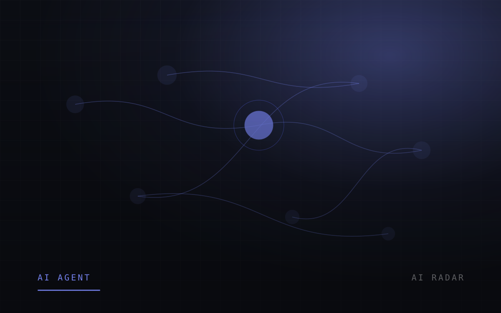

MCP Apps 上線：工具回傳的不再只是文字，而是可以操作的介面
MCP 的第一個官方 extension：工具回傳的不只是文字，而是能在對話裡直接操作的互動介面，Claude 已用它把 Asana、Figma、Canva 開進聊天室。
- MCP
- 互動介面
- 工具整合

重點速覽
- 1工具宣告一個 ui:// 資源，就能把互動 HTML 回傳到對話裡
- 2Claude 直接用它把 Asana、Figma、Canva 開進聊天室動手改
- 3上線當天就有 Claude、Goose、VS Code、ChatGPT 等 client 宣布支援
- 4官方 repo 附四個 Agent Skills，讓 coding agent 直接幫你造 UI
MCP Apps 是 Model Context Protocol 的第一個官方 extension，2026 年 1 月 26 日正式上線。從前 MCP 工具只能回傳文字與結構化資料；現在工具可以在自己的定義裡掛一個 ui:// 資源，host 把它抓下來、塞進沙箱 iframe 渲染，你就在對話裡直接操作那個介面。
它到底能做什麼
作法是把 MCP 原本就有的兩個元件接起來：一個帶 _meta.ui.resourceUri 的工具，加一份用 ui:// 提供的 UI 資源（目前支援的格式是 text/html;profile=mcp-app）。渲染之後，UI 與 host 之間用 JSON-RPC over postMessage 雙向溝通——UI 可以呼叫 server 上的其他工具，host 也能把新資料推回去，所以圖表能在對話裡被篩選、鑽取，而不是只回你一張靜態圖。
這個規格是 SEP-1865，2025 年 11 月由 MCP-UI 開發者與 OpenAI、Anthropic 的 maintainer 一起提案。上線當天 VS Code 就在 Insiders 推出支援，官方自稱是第一個完整支援 MCP Apps 的 AI 編輯器；MCP 官方部落格則把 Claude、Goose、Visual Studio Code、ChatGPT 都列進支援名單。
為什麼值得注意
Anthropic 在 Claude 上把它做成看得見的東西：interactive connectors。Asana、Slack、Figma、Canva、Box、Hex 這些工具會開在對話旁邊，你可以自己動手，也可以叫 Claude 動手。2026 年 11 月 10 日再進一步，Asana、Canva、Carta、Dropbox、monday.com、Smartsheet、Vercel、Webflow 可以把完整工具開在側邊或全螢幕，登入你自己的帳號，Claude 能改你正在看的那一頁、那一列、那個檔案，改動即時出現，你按核准。Anthropic 官方說這是靠 MCP Apps 的 app tools 與 embedded sites，開發者端目前是 public preview。
安全模型官方列了四層：iframe sandbox、host 可以在渲染前檢視 HTML、UI 到 host 的所有訊息都是可稽核的 JSON-RPC、UI 發起的工具呼叫可以由 host 要求使用者同意。
實際可以怎麼用
SDK 是 npm 上的 @modelcontextprotocol/ext-apps，官方 repo 另外附了四個 Agent Skills：create-mcp-app 從零長出互動 UI、add-app-to-server 替既有 MCP server 的工具加介面、migrate-oai-app 把 OpenAI App 搬過來、convert-web-app 把現成網頁變成 hybrid。在 Claude Code 裡一行 /plugin marketplace add modelcontextprotocol/ext-apps 就能裝，或改用 npx skills add modelcontextprotocol/ext-apps。
還沒被驗證的地方
安全模型裡有兩條寫的是「host 可以」而不是「host 必須」——檢視 HTML 與要求使用者同意都是 client 的選擇，官方公告並沒有保證每個 client 都做。同一篇也提到，app 可以「安靜地更新模型的 context 供後續使用」，而要不要把這件事顯示給你看，規範沒寫。要連別人的 MCP server 之前，官方自己的建議仍然是：自己查清楚。
延伸潛力
- 同一份 MCP App 可跨 client 執行，工具介面變成可攜格式（推測）
- 企業內部工具寫一次 UI，就長在員工每天開的 AI 助理裡（推測）
- 儀表板、審稿與設定精靈搬進對話，可能改變 SaaS 的入口（推測）
延伸運用是合理外推，不是官方公告的功能。
原始來源
- MCP 官方部落格：MCP Apps 正式上線（2026-01-26）blog.modelcontextprotocol.io
- MCP 官方文件：MCP Apps 概觀modelcontextprotocol.io
- MCP 官方文件：MCP Apps 的 Agent Skillsapps.extensions.modelcontextprotocol.io
- Anthropic 官方文章：Interactive connectors and MCP Appsclaude.com
- Anthropic 官方文章：Open your apps in Claude and work in them together（2026-11-10）claude.com
- VS Code 官方部落格：MCP Apps support in VS Code（2026-01-26）code.visualstudio.com
- MCP SEP-1865：MCP Apps 互動使用者介面modelcontextprotocol.io